鸟哥的 Linux 与 ADSL 私房菜 


使用 Windows 2000 做为主机分享网络的带宽
适合 ADSL 固定制与固定 IP （如学术网络）
最近更新日期：2002/01/26
目的与适用性
准备工作
申请 ADSL
安装 Windows 网络卡
硬件之间的线路连接
移除或增加通信协议
内部网络：激活网络上的资源分享
外部网络：挂机上 Internet
激活挂机分享
Windows 用户端计算机的设定
连不上一些站点的处理方法-MTU 修改
目的：
就如同前面几篇所说的：直接以 Hub 挂机进行分享的好处是简单，但是缺点则是受限太多，因为挂机计算机的上限被限制在你的 ISP 所提供的挂机数，例如中华电信仅支持两个 IP 给一个帐号使用，Seednet 虽然可提供 5 个 IP ，但是对于学生宿舍族群来说，毕竟还是不够的！因此我们可以藉由服务器的架设来实现带宽分享的目的。那为何选择 Windows 2000 而不使用 IP 分享器？
由于 Windows 2000 通常都是随机附赠的随机版，为合法软件；
Windows 2000 不但可做为服务器，当前的硬件配备跑 Windows2000 也是绰绰有余；
Windows 2000 的兼容性还算不错，做为服务器的这架主机仍然可以让你来玩 Game 或者是作为你的工作环境（office工作）！
并且， Windows 2000 亦具有良好的图形界面！
因此也适合做为服务器！但是，在前面提到的 适合 ADSL 拨接制的 Windows 2000 服务器仅需要一块网络卡即可达到分享的目的，然而若是固定制的 ADSL 呢？就是具有固定 IP 的 ADSL 呢？由于这种固定制的 IP 是固定的，所以根本就不会有拨接之后生成的所谓的『虚拟界面』这一个虚拟的网络卡，嘿！那要如何分享带宽呢？因为一般固定制的 ADSL 了不起就是给了 5～8 个 IP ，根本也不够一些公司行号来使用呀！所以我们要来绍介一下以 Windows 2000 分享带宽的方法罗！
原理：
以服务器连接上 Internet 的原理其实很简单，主要分为以下的步骤：
在 Windows 2000 主机上面安装两块网络卡（最好选择两款不同芯片组的网络卡）；
一张网络卡专门对内，直接以『并行线』连接到 Hub 或 Switch 上面；
另一张网络卡专门对外，直接以『跳线』或『并行线』（依据不同的配备而异）连接到外部的调制解调器或者是网络插孔；
利用 Windows 2000 缺省的『网络共享机制』激活 NAT 服务；
将所有用户端（ Client ）计算机以『并行线』接上 Hub 或 Switch。
特别注意 Windows 2000 上面需要有两张网络卡，其中一张对内一张对外，由于操作系统的问题，很有可能网络卡会捉错！因此，建议选择两款『不同芯片』的网络卡来进行此一分享！例如选择一块『螃蟹卡』而另一块则可以选择『D-Link 的 530 系列』的网络卡。请留意， D-Link 530 系列网络卡在 Windows 上面其实是一块等价棒的网卡，然而在 Linux 的系统当中却等价的有问题，所以如果您是『双操作系统』的配置，那幺则不建议选择『D-Link 530』系列的网络卡喔！另外这里必须注意：Windows 2000 缺省的网段为 192.168.0.0/24 这一段，所以您的虚拟网络中，所有的 IP 都必须在这一个网段之内！此外，由于您的局域网的计算机都是通过 Windows 2000 上网，所以所有的挂机出去的计算机，在 Internet 上面看起来的 IP 都是同一个。
缺点：
虽然以 Windows2000 作为挂机服务器，对于不想多花钱买一个 IP 分享器的学生族群有一定的吸引力，但是，做为服务器的这架 Win2000 在使用中一定要小心，因为如果他一挂点的话，所有藉由这架主机挂机出去的计算机通通都会无法挂机！你得期待使用这架主机的同学们不会乱搞喔！另外， Windows2000 对于硬件资源的请求比较高，因此你没有办法使用淘汰掉的旧计算机来作为 Windows2000 服务器。此外，由于 Windows 2000 的 NAT 有部分的功能怪怪的（牵涉到网络传输的一些情况），所以您必须在每一部 Client 计算机上修改 MTU 值才能连接上所有的 Web Site 喔！不过，虽然如此，他还是有可用之处啦！
适用性：
Windows 2000 主机上面安装两块网络卡，特别适合固定制的 ADSL ，以及一般固定 IP 的网络情况（如学术网络）；
不过这里请特别留意， Giga 的拨接制 ADSL 虽然号称固定 IP ，但是由于他仍然是藉由拨接来实现网络连接，因此仍然会有虚拟的网络界面卡，所以『Giga 的拨接制 ADSL 并不适用于本方法中』；
可连接的计算机数量比较多（理论上可达 250 部）
做为主机的 windows2000 计算机不可关机，且引导系统后即需要连上 Internet，
其他用户端计算机引导系统后立即直接连上 Internet ，而不用再拨接！
所需要的软硬件配备：
一部具有两块网络卡的 Windows 2000 主机（Windows 2000 使用一般的版本即可，不需要特别的 Server 版）；
用户端计算机（ Client ）计算机均需要一块网络卡；
n+1 条网络线（其中可能需要一条跳线）；
一个集线器（就是 Hub 啦）；
固定制 ADSL （连同 ATU-R）或者是固定 IP 的学术网络。
在中华电信的网页中有图求助明每一种网络挂机应该注意的硬件设备，您可以去看看。
这部分请参考 Hub 挂机分享 的部分！
安装网络卡谁不会！？但是由于 Windows 2000 主机上面乃是安装两块网络卡，所以在网络卡的选择及安装上面较不相同喔！基本上 VBird 的建议是：
在主机内的两张网络卡的型号最好不要相同，也是要避免你在设定的时候发生错误的情况。如前所述，一块网络卡选『螃蟹卡』另一块可以考虑其他的芯片，例如 D-Link 530 等等的卡；
安装网络卡的时候，先安装一块，引导系统后让 Windows 2000 捉一遍，等设定完成之后，再关机安装第二块网络卡，然后在引导系统让 Windows 2000 捉第二遍。这样有一个好处，就是可以避免由于如果选择相同芯片的网络卡时，可以避免 Windows 2000 在设定上的一些误判！
做为主机的那一台 Windows2000 计算机的第二张网络卡，最好等到这架主机已经可以经由拨接或者是固接的方式连上 Internet 之后再安装，以避免在您做 NAT 转换时设定错误；
在主机内的两张网络卡的速度选择上，当然最好都是 10/100Mbps 的，如果你有 10Mbps 的老旧网络卡，那可以将这一张较慢的网络卡作为『对外挂机的卡』，因为对外挂机的速度通常不可能高于 10Mbps 的！至于对内的卡则可以选择较快一点的；
在 Hub 的选择上，如果你每一部计算机都是使用 10/100Mbps 的网络卡，哪你可以直接选买 100Mbps 的 Hub （不用自动识别也没关系），因为只有 ATU-R 的速度较慢，但 ATU-R 是直接与主机连接的呀！所以所有连上 Hub 的接口都是以 100Mbps 在跑，速度真的是很快（ VBird 有试过，当全部的接口（包含 Hub ）都是以 100Mbps 在跑的时候，最大的传输速率可以到达 12MBytes/second，一个 600MB 的文件在你的网内机器上不到 1 分钟就传送完毕了！！）
基本上，安装网络卡的方式不外乎：
（1）将硬件安装好；
（2）引导系统让 Windows 找驱动程序；
（3）Windows 找不到驱动程序的话，就放入驱动程序片，让 Windows 去捉；
（4）如果还不行安装的话，就直接到『开始』->『设定』->『控制台』->『新增移除硬件』去搜索一下罗！
硬件的线路连接跟前面两种方法就不太一样了！他需要将 Windows 2000 的对内与对外网络分别开来，所以基本图示如下图所示：
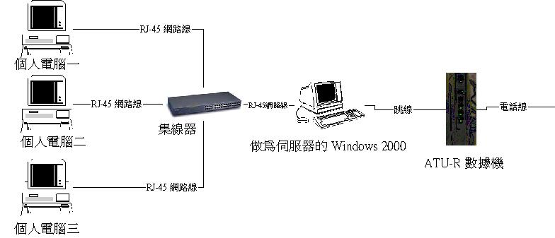
基本上，挂机的设备顺序可以是这样：
先安装 Windows 2000 的第一块网络卡；
先将 Windows 2000 主机以『跳线』将第一张网络卡与 ATU-R 调制解调器连接；当然了，如果你是类似学术网络之类固定 IP 的网络条件下，那幺就必须要视您的网络设备来选择您的网络挂机之线材了。以 VBird 为例，我们研究室只有一个对外孔，而这个对外孔与内部计算机的连接基本上已经是『跳线』型态了，所以我们可以直接将这个对外网络线接到 Windows 系统的计算机中。不过，基本上是无法接到 Hub 的正常孔中！
ATU-R 与电话线连接之后，先输入您的固定 IP 与所需要的各项网络参量。说穿了其实也只有：IP、Netmask、Gateway、DNS 这几个东西而已。然后接上 Internet ，并确定 Internet 问题不大！
将第二张网络卡安装上 win2000 主机，并以正常的 RJ-45 网络线『并行线』连接上 Hub 的正常孔；
将所有其他计算机安装上网络卡后，并将网络卡与 Hub 的正常孔以『并行线』连接；
打开 Hub 电源，并开始 windows 的设定。（注意，并没有用到 Hub 的 Up-Link 孔）；
如果你有两个以上的 Hub 的话，以正常线连接第一个 Hub 的 Up-Link 孔，并串接到第二个 Hub 的正常孔就可以了。
至于其他的部分，请参考 以 Hub 挂机分享 那一篇文章，里面的内容都一样喔！
在我们的分享中，最重要的自然就是 Windows 2000 是否可以正确无误的连接上 Internet 罗！OK！那以下我们来测试看看吧！
视察网络卡形式：
在你两张网络卡安装完成之后，于系统中应该可以看到如下的屏面：（鼠标移动到『我的计算机』按『右键』选『内容』按下『硬件』再按下『设备管理员』）
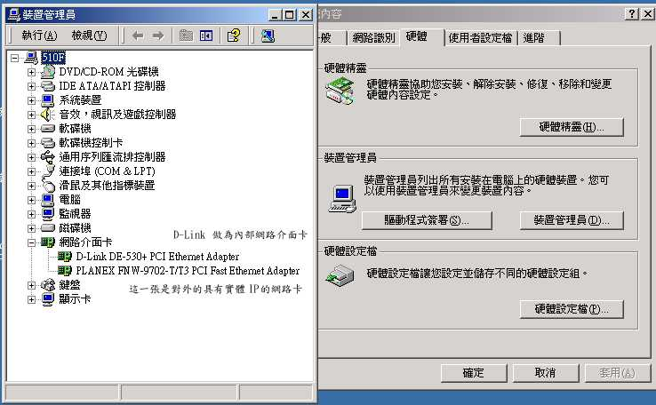
上图中，我们选择 D-Link 做为内部网络而 PLANEX 则做为外部网络的界面卡。要注意的是『硬件设备中是否有出现？符号的咚咚！如果有，那就是该设备有问题，请更新其驱动程序吧！如果问题不大的话，就可以关掉这个窗口罗！
连上 Internet：
基本上有几样东西我们一定需要知道：
ISP 给我们的 IP；
ISP 给我们的 netmask；
ISP 给我们的 Gateway ；
以及 ISP 自己的 DNS 。
在『网络上的芳邻』按右键，选内容后会出现如下的屏面，其中，本地挂机为 PLANEX 对外的接口，本地挂机2则为对内的挂机。
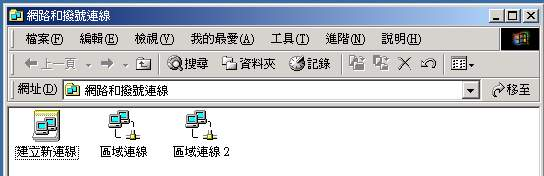
在上图中于『本地挂机』按右键选内容，会出现如下屏面，显示使用的界面为 PLANEX 这块卡，并且已经安装了一些常用的通信协议，如果你没有这些通信协议的话请按『安装』选择『通信协议』后，增加通信协议吧！（请注意喔！只要 TCP/IP 及 NetBEUI 即可，其他的不需要喔，详细请看一下 TCP/IP 的迷思 一文！）
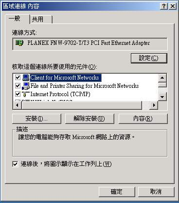
接下来则是输入固定制时， ISP 给你的（1）IP（2）通信闸（3）DNS等，按上图中的『Internet Protocol (TCP/IP) 』这一项，会出现下面屏面，然后分别输入你的IP，缺省网关（通信闸）及 DNS，完成后按『确定』即可挂机上网；
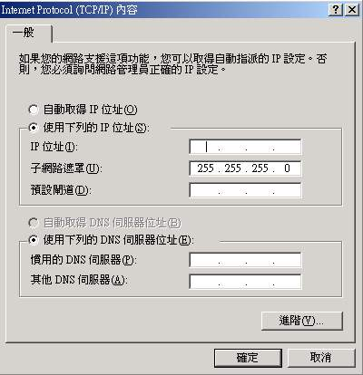
这样应该就可以连上 Internet 了，如果不行的话，请详细的检查一下您的：
硬件挂机有无错误？
中华电信机房有无问题？（或学术网络是否又断线了？）
ISP 的服务器是否正常？
ISP 给的网络参量有没有错误？
我的 Windows 2000 设定是否正确？（最常错误的地方出现在 DNS 喔！）
在你安装完了 ADSL 拨接程序之后，在您的网络接口中应该会有两个接口才对！如果没有两个接口的话，表示有点问题罗！这点请特别小心。然后你将鼠标移动到『网络上的芳邻』上面按『右键』选『内容』之后，应该会出现几个『局域网』的小图示，随便点选一个图示，会出现如下的屏面
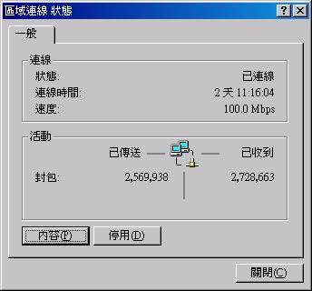
这个屏面告诉你当前的网络状态，然后按下『内容』会出现如下的屏面：
好了，就如同上面的图示，请按下『共享』项目：
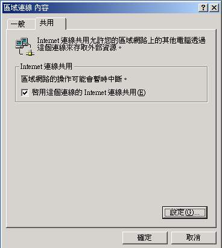
然后将『激活这个挂机的 Internet 挂机共享』打勾，再按确定，会出现下面的屏面：
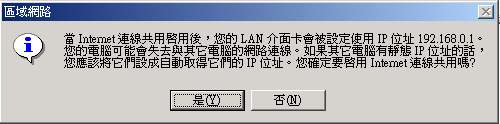
这个地方告诉你，你的内部网络的那张网络卡（就是物理网络卡），已经被设定为内部网络的通信闸，而且通信闸的 IP 被设定为 192.168.0.1 这一个虚拟 IP ！请特别注意，如果您勾选错误的网络接口来共享，你的网络将会不通！好了！然后你在另外一个『本地挂机』小图示上面双击，并选择『内容』后，会出现如下的屏面：
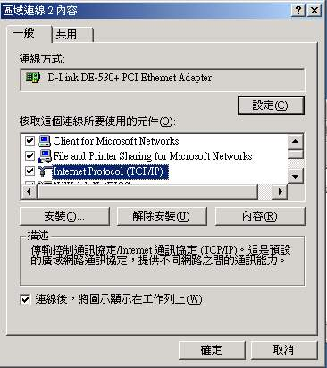
然后点选『Internet Protocol (TCP/IP)』这一项，出现下面屏面（注意罗，底下的界面会自动设定，如果没有自动设定的话，那幺表示有地方一定有问题罗！
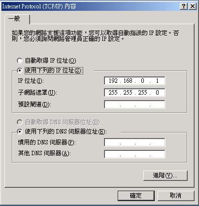
上面就明白的告诉你，这一张被作为内部网络的通信闸的网络卡，其 IP 为 192.168.0.1 ，且子网络掩码为 255.255.255.0，所以你在设定其他的计算机时需要注意道：
Client 的计算机 IP 必须在：192.168.0.2~192.168.0.255 之间；
Client 的计算机 Netmask 必须为： 255.255.255.0；
Client 的计算机通信闸必须为：192.168.0.1；
Client 的计算机 DNS 设定与主机的 DNS 设定相同（这里最容易搞错！ 在 Client 端的计算机的 DNS 必须设定为类似 139.175.10.20 这个 Seednet 提供的 DNS 主机 IP 才行，当然，如果您是 Hinet 的用户，那幺也需要输入 hinet 的 DNS 主机 IP ，千万记住，这里『不是输入你的 Windows 2000 的 IP』，网友们最容易出现错误的地方就是在这里，大家常常会将 DNS 输入成 192.168.0.1 ，这是『错误的』，请特别小心罗）
这样就 OK 罗！从此以后，你的 Client 端计算机就可以上网罗！阿～～福气啦！
在主机端设定完毕之后，用户端的设定就简单很多啦！因为你已经知道你的通信闸是 192.168.0.1，所以你要先确定挂机上这部主机的其他计算机有几部，在这些欲连上主机的计算机的 IP 必须是 192.168.0.XXX，其中XXX为 2-254 之间的整数，且『每一部计算机的 IP 都不可以相同』，好啦！让我们来做设定吧！
在 Windows 系统下，在『网络上的芳邻』按右键选内容后出现如下屏面，当然，一些通信协议你要先安装喔！安装的方法可以看这里说明。：
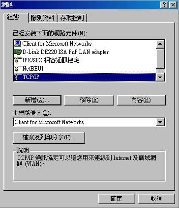
上图中，点选『TCP/IP』这一项，出现：
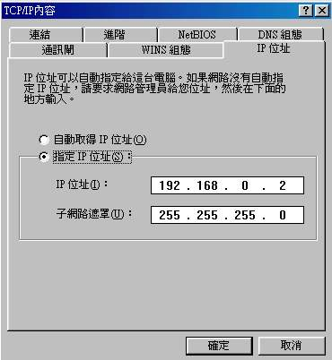
在上图中，输入这部计算机的 IP （192.168.0.xxx），而且子网络掩码一定是『255.255.255.0』
在上图中点选通信闸，出现下面屏面：
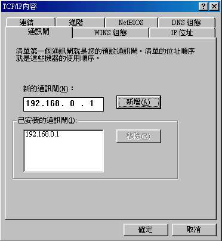
在这个屏面中，输入 192.168.0.1，并按『新增』则计算机会将你的网络卡连接到主机那张网络卡上面去啦！基本上，到这里就已经设定完毕了！不过，你可以再输入一下你惯用的 DNS 喔！什幺是 DNS，简单的说，就是将类似 kimo.com.tw 这样的文字转换成 物理IP号代码 的一部机器啦！
在上面的屏面中，按下『DNS组态』后，出现：
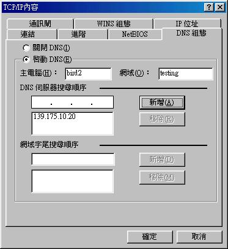
以鸟哥为例，鸟哥是使用 Seednet 的帐号，所以鸟哥的惯用 DNS 则成为了 139.175.10.20 啦！另外，主机及网域可以写也可以不用管他，随便输入都可以喔！这个 DNS 如果设定错误的话，那幺你将无法用 IE 连上 Internet 喔！千万注意了！
再来就是设定你的文件可以给其他人使用啦，回到第一面，点选『文件及打印分享』，并勾选两者，按确定后退出！
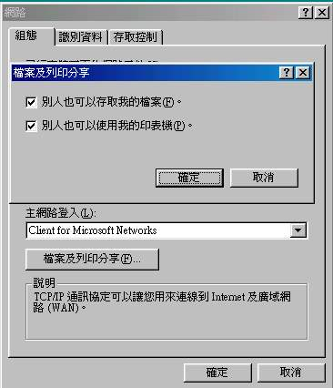
最后，当然就是重新引导系统啦！这样一来，当 Windows 2000 那部主机只要在引导系统而且挂机的情况下，所有的内部网络读计算机均可以通过他来连接上 Internet 啦！
常常我们若使用 Windows 2000 作为挂机分享的软件的时候，总是有些站点无法顺利的接上去！但是在主机端则没有问题！这真是伤脑筋呀！其实，这个问题需要藉由修改『每一个 Client 端计算机的 MTU 来修正』之。
其实不只是 windows 2000 ，就是使用 windows 98 以一些挂机分享的软件来作为带宽分享工具时，同样也会有这个问题生成的！就是用户端无法浏览某些站点或是无法发送内含附件的电子信函。而造成这个问题的原因就是 MTU 的问题啦！什幺是 MTU 呢？那就是 Maximum Transmission Unit 的缩写！那是啥？其实 VBird 也不是很清楚，只知道不同的接口具有不同的 MTU 请求，当 MTU 的需求与你的网络接口不同时，就会有问题发生啦！一般而言，MTU 在网络卡（EtherNet）的缺省值为 1500 单位！好啦！刚刚说到不同的网络接口具有不同的 MTU 请求，那以下就列出一下各主要的网络接口之 MTU 的请求啦！
|
网络接口 |
MTU |
|
EtherNet （一般的网络接口，这是缺省值） |
1500 |
|
PPPoE(ADSL用的) |
1492 |
|
Dial-up(modem) |
576 |
由上面的表格我们可以知道，缺省的网络接口 MTU 是 1500 ，那 PPPOE 使用的是 1492，自然而然的 MTU 请求并不相同，所以啦！有一些网页、邮件数据等等的咚咚就无法合理的让你使用啦！
那该如何解决呢？ 其实只要调整 Client 端网络卡的 MTU 值即可完全解决此一问题！而且藉由调整 MTU 值也可以增进网络效率呢。 那首要课题自然就是知道你的网络卡所可以负荷的 MTU 啦！因此我们第一步就是要找到适合的 MTU ：
找出 MTU 值：
在 windows 底下要找出 MTU 值就必须进入 DOS 模式，并且知道你的分享的主机的 IP 才行！例如你的主机是 windows 2000 且对内的分享的 IP 是 192.168.1.2，那幺你可以这么做：
进入 MS DOS 模式；
打入 ping -f -l 1500 192.168.1.2
|
C:\WINDOWS>ping -f -l 1500 192.168.1.2 Pinging 192.168.1.2 with 1500 bytes of data: Packet needs to be fragmented but DF set. Ping statistics for 192.168.1.2: |
上面的式子中，-l 是 L 的小写（不是 1 喔），1500 是我们要测的 MTU 值，结果出现了 Packet needs to be fragmented but DF set. 这个东西，那表示MTU值太大了，你需要更小的 MTU 值才行！好啦！那假设我们使用 1464 来测试时：
|
C:\WINDOWS>ping -f -l 1464 192.168.1.2 Pinging 192.168.1.2 with 1464 bytes of data: Reply from 192.168.1.2: bytes=1464 time=10ms TTL=128 Ping statistics for 192.168.1.2: |
结果出现了响应了！这表示这一个 MTU 值是可行的！不过，强烈建议找出可行的最大 MTU 值！这样一来，在设定的时候，才可以达到最佳的网络速率！
找出 MTU 值：利用上面这个方法找到的数值还不是 MTU 喔！由于一些封包上面的问题，上面这个值再加上 28 才是我们所需要的 MTU 值！所以，在上面的例子中，我们所需要的 MTU 值是 1464+28=1492 啦！
修改 MTU 值：
OK！我们已经找出 MTU 值啦，那下一步自然就是修改罗！要如何修改呢？其实也是很简单，只要通过 Windows 本身缺省的 registry 修改即可！
Windows 98：
在 『开始』>『运行』中，键入<regedit>，会出现一个大框框；
选择：『HKEY_Local_Machine』>『System』>『CurrentControlSet』>『Services』>『Class』>『NetTrans』>『000n』
上面最后一个数据是 000n，那个 n 指的是数字，以我为例，在 NetTrans 底下有两个数字，分别为 0000 与 0002，若按下 0000 会显示我的 Gate Way 以及我的网络卡的 IP 项目，至于 0002 则没有我的网络卡的相关信息，所以 0000 那这一个就是我的网络卡接口啦！请依你的情况选择！
选择你的网络卡接口后（以我为例，单击 0000 那一个机代码），按下『编辑』>『新增』，然后选择增加『DWORD』值；
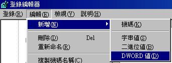
将新增的机代码取名为『MaxMTM』，并且在新增加的那个机代码上面按右键，选『修改』，会出现如下屏面，选择『十进制』后，输入刚刚我们找到的那一个 MTU 值：
改完之后你应该会看到如下的屏面喔！那就是成功了！
Windows 2000：
在 『开始』>『运行』中，键入<regedit>，会出现一个大框框（注意，也有可能是 regedit32 这个运行档，请依你的机器来操作）；
选择『HKEY_Local_Machine』>『SYSTEM』>『CurrentControlSet』>『Services』>『Tcpip』>『Parameters』>『interface』，有点象下面的图示：
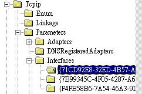
在 interface 底下可能有很多的接口，你一个一个的去看，会有一个接口与你的网络卡的 IP 相同，那个就是你要挑选的接口啦！然后同样的在该接口上选择『编辑』>『新增』>『DWORD值』之后，创建一个名为『MTU』的机代码，然后选右键『修改』，选择十进制，填入我们刚刚找出来的 MTU 值！大功告成！
基本上，这样应该已经可以解决你的问题了！相关的网页你可以到底下两个网页去看看！
http://www.microsoft.com/taiwan/msclub/member/TIPS/Spring_2001/tip1to3/tip1to3_2.htm
http://redhat.ecenter.idv.tw/bbs/showthread.php?s=&threadid=21620&highlight=MTU
另外，网友有建议另一个测试 MTU 的网页，你也可以上去瞧一瞧，不过，要上这个网页之前，『请先将你的 代理服务器设定 取消』否则测到的会是你的 Proxy 而不是你的真实 IP 喔！
http://forums.speedguide.net:8117/
2002/ 01/27以来统计人数


Designed by VBird during 2001-2004. Aerosol Lab.